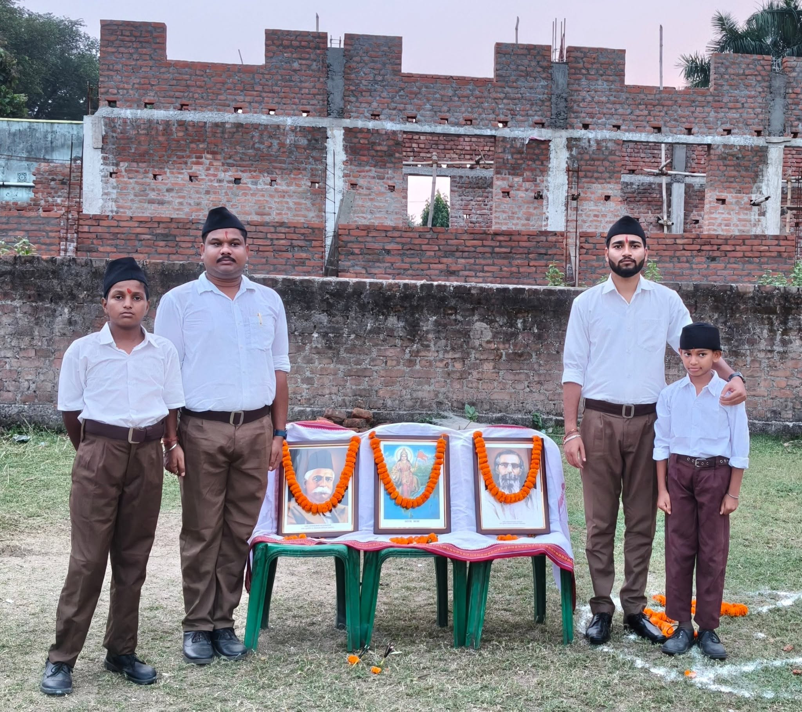
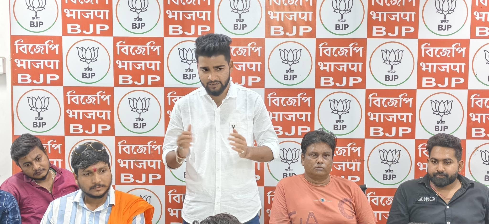
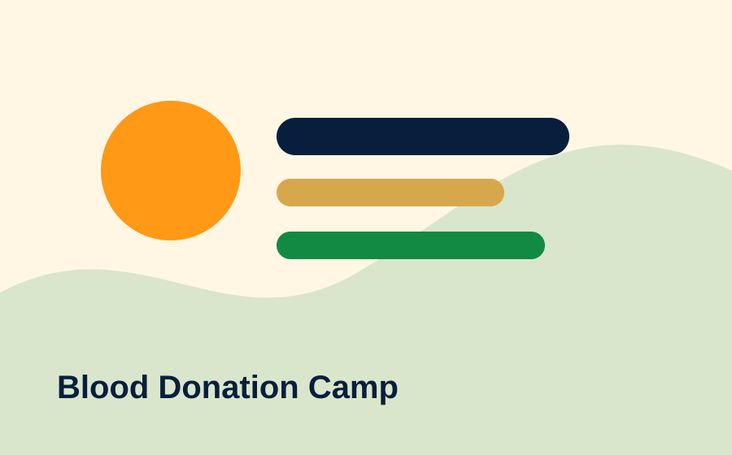
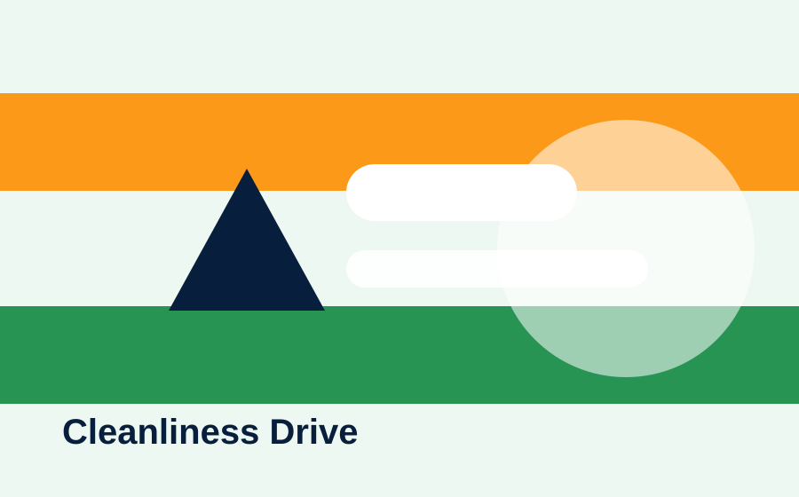
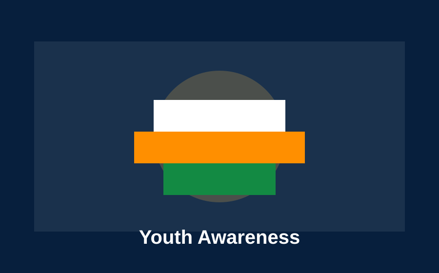
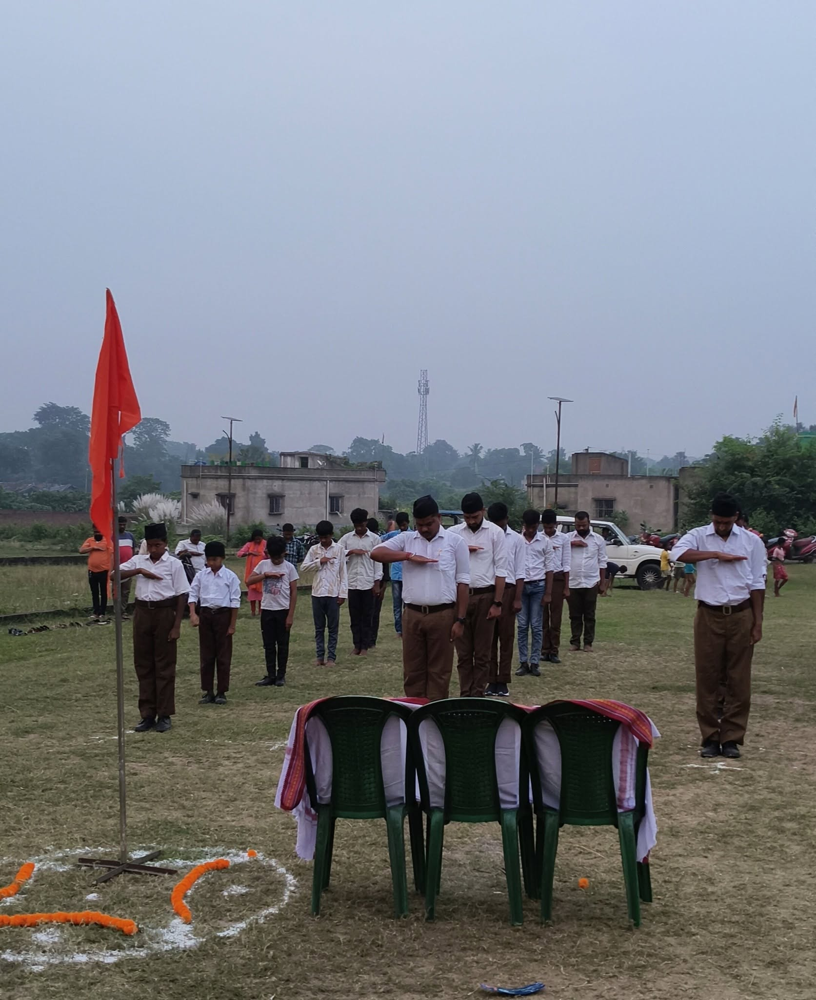

Abhik Kumar Mondal works as a BJP Yuva Morcha leader in Asansol, focusing on youth organization, public awareness, civic responsibility, and people-focused social service.

Each initiative reflects BJP Yuva Morcha values: disciplined organization, youth participation, civic awareness, and direct connection with local people.
Connecting young supporters with constructive political work, discipline, and booth-level public outreach.
Sharing messages on civic duties, social responsibility, national values, and local issues.
Maintaining direct contact with residents, listening to concerns, and coordinating support through local teams.
Organizing civic cleanliness activities with youth workers and local citizens.
Encouraging youth participation in health-related service activities and donor awareness.
Promoting nation-first thinking, organizational discipline, and service-oriented political participation.

Activities focus on organization building, public contact, awareness programs, and service work rooted in BJP's nation-first political values.
Connect With Team


